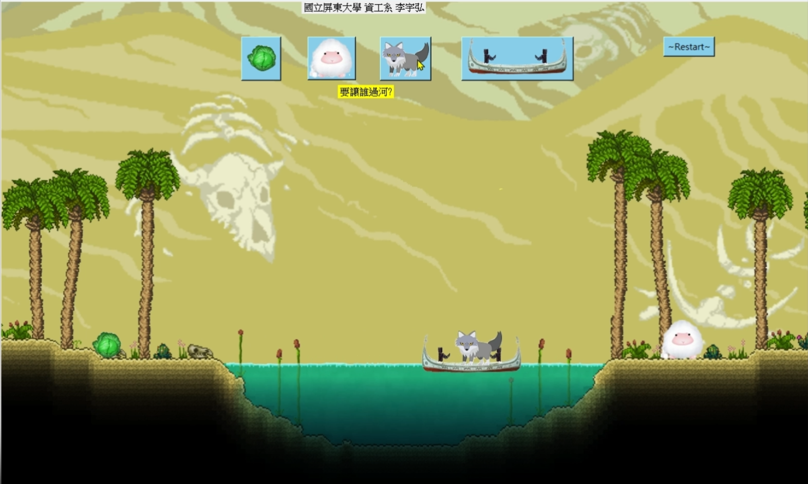
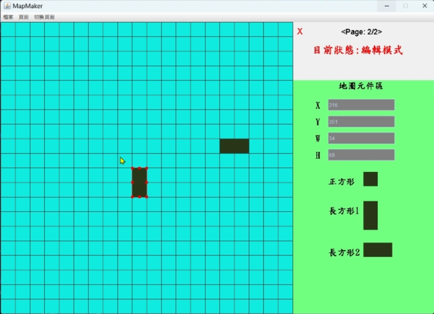
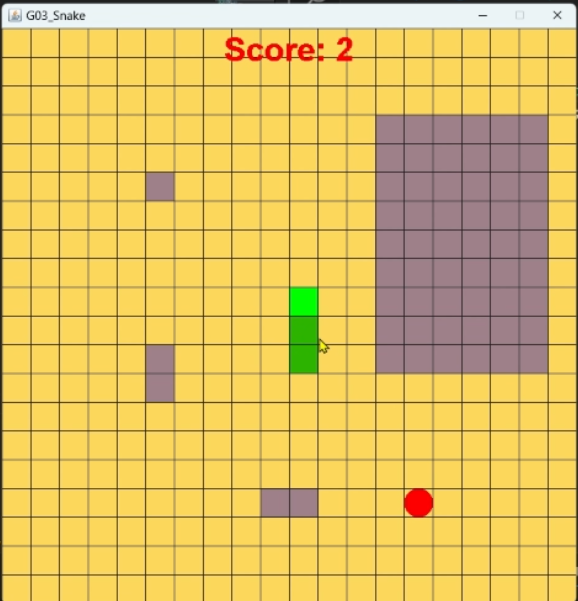
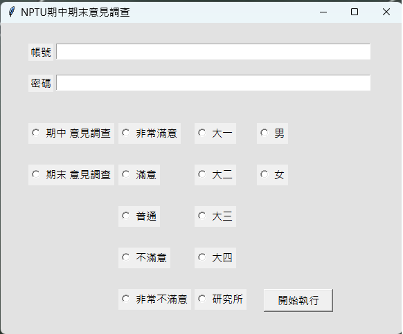
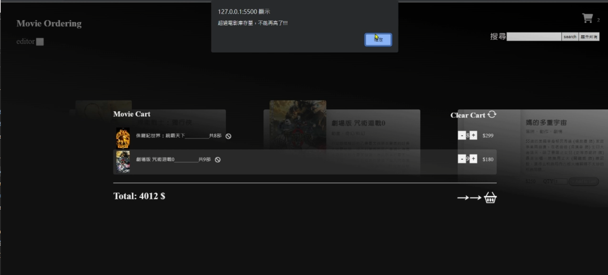

視窗程式設計
期末專案題目指定為利用python製作狼羊菜過河遊戲，隊員只限一人。 製作過程中遇到圖片移動與預想的不同，因此最為困擾的是圖片移動過程與抵達後的位置需事先定位。

期末專案題目指定為利用Java製作繪圖相關軟體，題目需自訂，隊員共3人(專題建議人數5人)。
軟體工程繪圖軟體
期末專案題目指定為利用Java製作繪圖相關軟體，題目需自訂，隊員共3人(專題建議人數5人)。
製作過程中遇到組員合作問題讓我一度認為課程將被評不及格，但我認為不能因此而怠惰不完成，因此也很感謝其他的組員願意讓我領導大家發揮各自所長，完成如此艱辛的任務。

軟體工程繪圖軟體專用遊戲本體
起初題目有包含遊戲本體，但因需要繪製UML與流程圖而改成遊戲地圖設計軟體，然而更改題目前已經把遊戲本體製作出來，所以軟體工程我們這組製作出了兩樣作品。

自製期中期末意見調查自動填寫軟體
製作原因:想更進一步熟悉selenium此套件而想套用到例行公事上。 製作過程遇到html之frame而讀取不到網頁程式碼，經過查詢而順利製作完成且可以順利執行。
